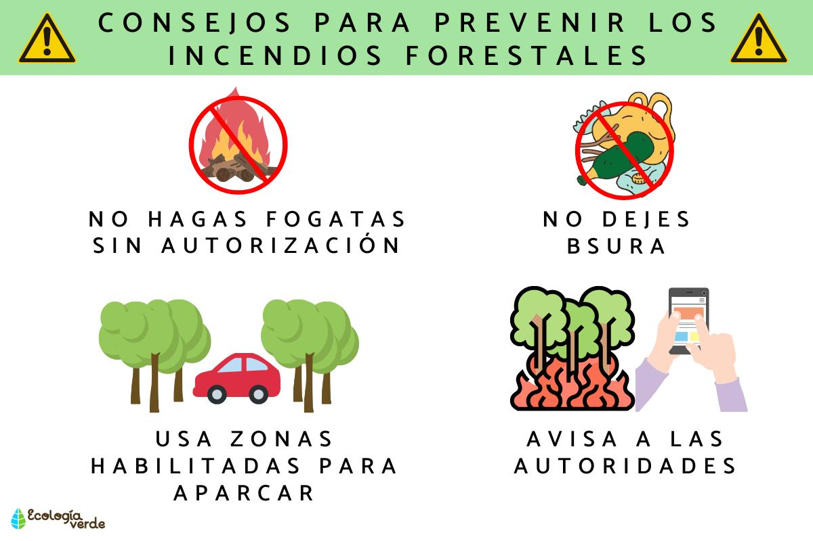

Algunas recomendaciones y estrategias para prevenir futuros incendios
1. Educación y concienciación pública
Campañas de sensibilización: Es importante educar a la población sobre los riesgos de los incendios forestales y cómo prevenirlos. Las campañas de sensibilización pueden incluir temas como la correcta disposición de residuos, el uso responsable del fuego y la prevención en épocas secas. Formación en técnicas de prevención: Organizar talleres y programas educativos para comunidades, agricultores y turistas sobre prácticas seguras y cómo manejar el fuego adecuadamente.2. Control y manejo de quemas agrícolas
Prácticas agrícolas sostenibles: Fomentar el uso de técnicas agrícolas como el cultivo en terrazas y la agroforestería, que integran árboles con cultivos, reduciendo la necesidad de quemar áreas grandes para cultivar. Regulación de las quemas controladas: Promover y regular el uso de quemaduras controladas en terrenos agrícolas para reducir el riesgo de que el fuego se descontrole, siempre con las condiciones adecuadas y bajo supervisión.Reflexión final:
La prevención de incendios forestales es un esfuerzo conjunto entre las autoridades, las comunidades, las empresas y los individuos. Todos podemos contribuir, ya sea educando a los demás, adoptando prácticas más sostenibles o apoyando políticas públicas que favorezcan un manejo adecuado del medio ambiente.